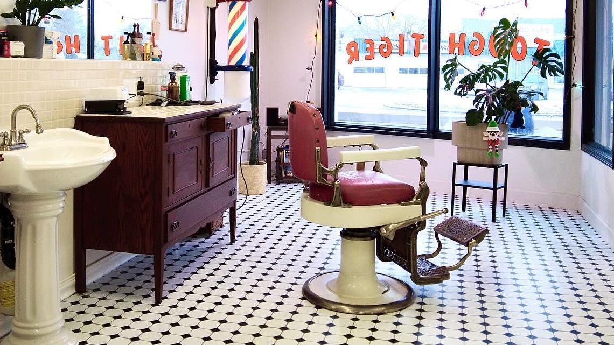
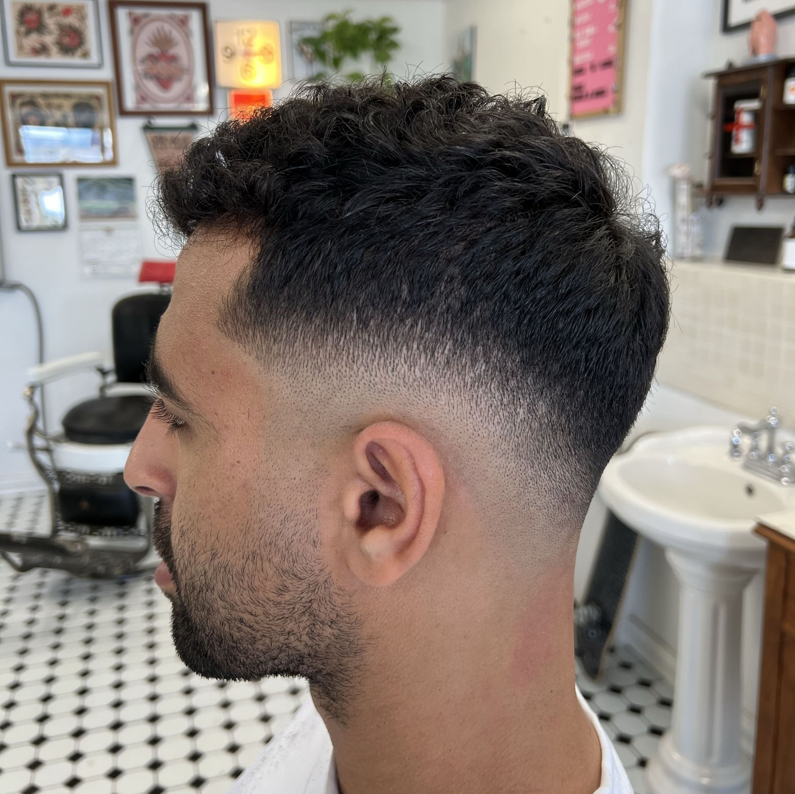
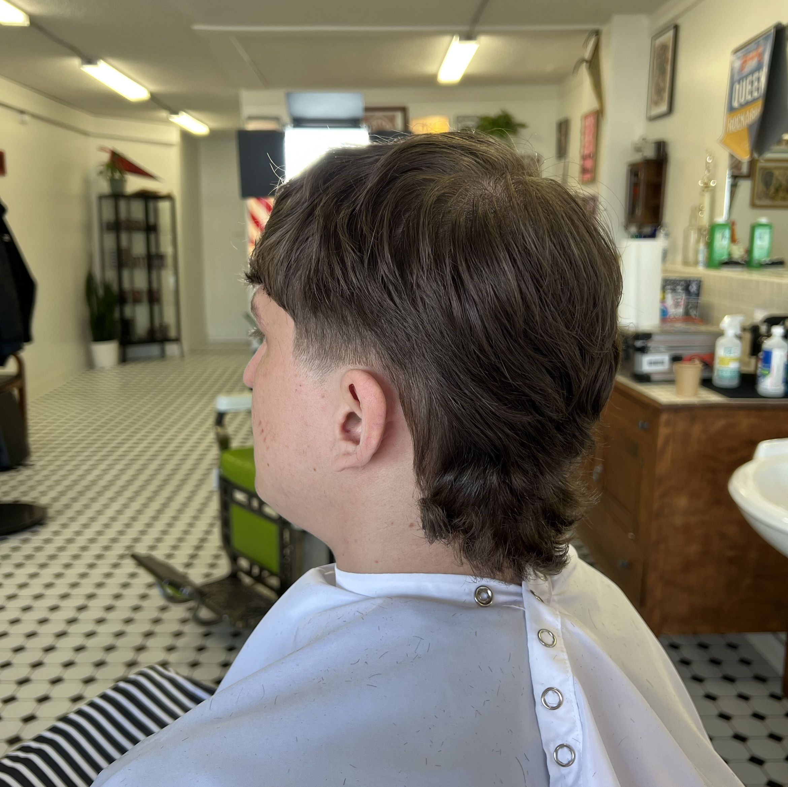
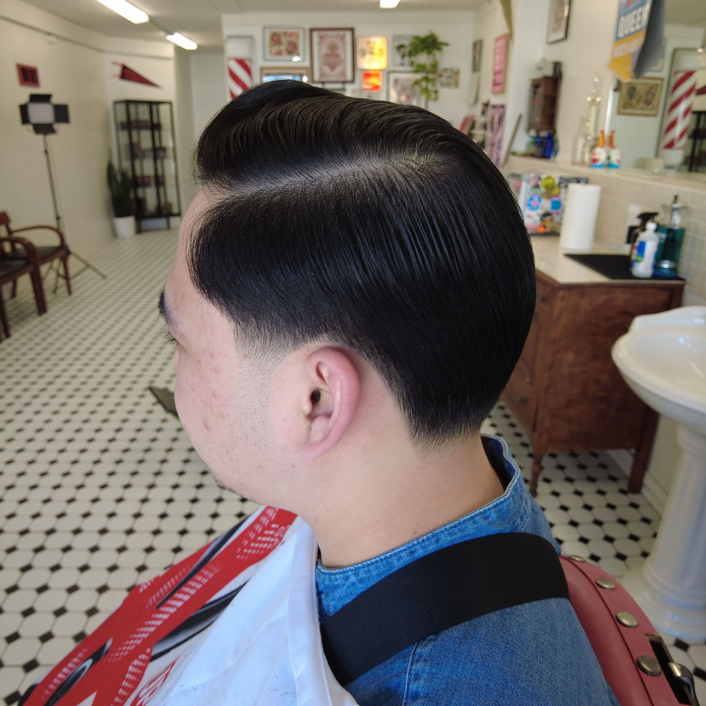
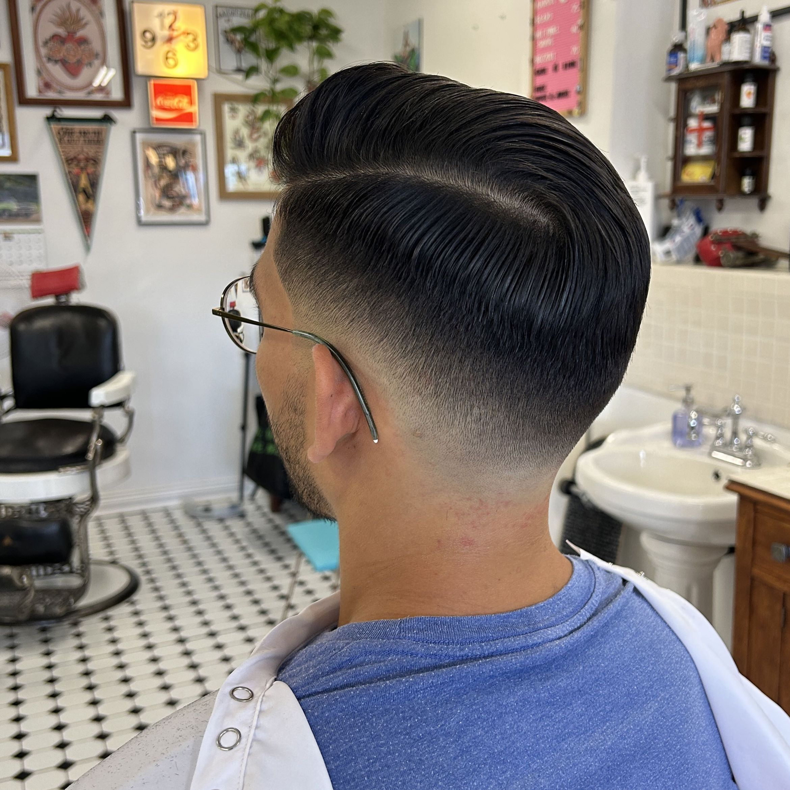

Regular haircut
The everyday cut, booked as its own service instead of being buried under a vague category.
Tough Tiger Barbershop keeps the offer simple on purpose. Pick the haircut you want, book it on Booksy, show up at 958 St. Mary’s Road, and get the kind of sharp finish people keep naming in the reviews.

Pick the cut you want, then book in under a minute. The Booksy menu is clear and practical, with regular haircuts, skin fades, beard appointments, and a quick buzz cut if that is all you need.
The everyday cut, booked as its own service instead of being buried under a vague category.
For people who want the clean fade work the recent Booksy reviews keep calling out.
A quick appointment when you want to keep it tight and keep moving.
The strongest proof is still the work itself: clean shape, sharp edges, and enough range to show this is more than one haircut repeated forever.




That is backed by recent April reviews and a review mix that is almost entirely five-star.
The recent reviews are blunt in the best way. Great fade. Good work. Maks exceeded expectations. Staff people trust enough to keep coming back.
The Instagram bio says appointment only and cash is king. The hours come from the live Booksy listing, including the Sunday split day.